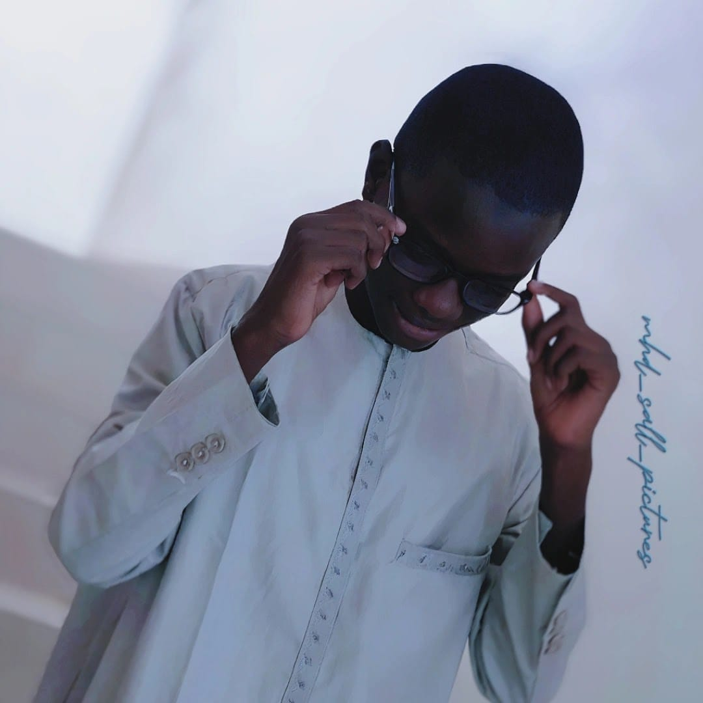

Président du Club Synergie pour l'Éducation au Numérique et aux Médias (SENUM)
Je suis un jeune élève en classe de seconde S engagé dans la promotion de l’éducation numérique, de la citoyenneté responsable et de l’innovation au sein du Lycée Galandou Diouf. En tant que Président du Club SENUM, je coordonne des projets éducatifs, des formations et des initiatives médiatiques.
Projets réalisés
Élèves impactées
Événements organisés
Organisation d’ateliers, conférences et production de contenus.
Sensibilisation à la citoyenneté numérique.
Vidéos éducatives et supports pédagogiques sur des techniques et dangers de l' internet.